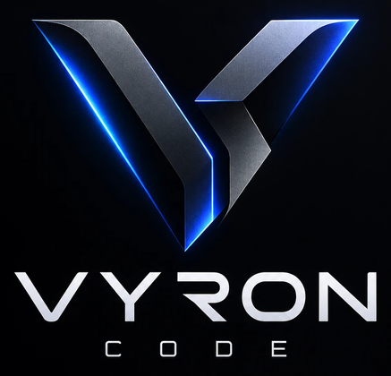

Yeni görev

Göreve eklenecek yetenekleri seç. Seçilen yetenekler görev alanında çip olarak görünür.
Sonuç bulunamadı.
Bağlayıcılar, görevin kullanabileceği hizmetleri listeler. Bağlı bir hizmeti görev alanından seçebilirsin.
Sonuç bulunamadı.
Yönettiğin web sitelerini burada topla ve her biri için tek tıkla görev başlat.
Henüz web sitesi eklenmedi.
Yerel AI
Görünüm
Modeller
Hangi iş için hangi model grubunun kullanılacağını seç. Her grup sırayla denenir; ilki yanıt veremezse sıradakine geçilir.
Araç izinleri
Araçlar açıkken yapay zeka yalnızca seçtiğin çalışma klasöründe dosya okuyabilir ve Vyron'un kendi tarayıcı penceresinde web sayfası okuyabilir (bu pencere senin Chrome'un değildir; yerel ağ adreslerine hiç gidemez). Dosya yazma, komut çalıştırma, web sitesi açma, sayfada tıklama ve yazma için her seferinde izin sorulur; şifre ve kart alanlarına asla yazılmaz. "Her zaman izin ver" dediklerin burada sayılır ve sıfırlanabilir.
Manager hafızası
Managers, projeye ait kısa görev notlarını bu bilgisayarda saklar ve sonraki görevlerde hatırlar. Notlar yalnızca bu bilgisayarda kalır.
Çalışma alanı verisi
Projeler, görev başlıkları, seçimler ve bağlayıcı durumları bu bilgisayarda saklanır. Görev metinleri ve yanıtlar saklanmaz.